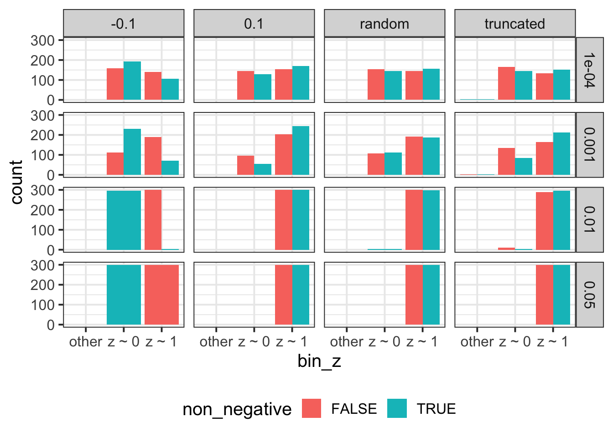

\[ \newcommand{\E}{\text{E}} \newcommand{\diag}{\text{diag}} \]
library(dplyr)
library(ggplot2)As tested on real data, the imputation scheme proposed here do not get good-quality imputation on real data. Going forward, the second thought, fit PRS on the fly (OTF), does not give observable power improvement in subsequent GWAS. Now that we switch to Framingham data where parental phenotypes are gene expression. In this context, the PRS-based approach starts to be more intriguing since to fit the whole transcriptome PRS on the fly is too much computation. More subtly, another drawback of OTF approach is that it relies on least squares estimator which requires large sample size to avoid over-fitting and degeneracy. Because of these reasons, we want to go back to the PRS approach.
As I was reviewing PRS-based EM code, I realized that it was fitting \(y = \mu_0 + \hat{G} + \epsilon\), which is a bit off in the context of continuous trait. The bad thing of this is that it does not tolerate the potentially different scaling between the observed phenotype in training PRS and the observed phenotype in the test phase. To account for this, we can fit \(y = \beta \hat{G} + \beta_0 + C + \epsilon\) instead. But there needs one more fix which is to constraint \(\beta\) to be non-negative. The intuition for this constraint is that \(\hat{G}\) should at least predict the direction and if the current model does not suggest this property, it can be considered as over-fitting. So, taking together, we have \(y = \beta \hat{G} + \beta_0 + C + \epsilon, \beta \ge 0\). Luckily, this corresponds to a simple update rule, which is \[\begin{aligned} \hat\beta_i &= \begin{cases} \beta_i^{\text{LS}} & \text{, if $\beta_i^{\text{LS}}$ > 0} \\ 0 & \text{, otherwise} \end{cases} \end{aligned}\]
With this variation in mind, I sketch the EM updates in below.
For simplicity, \(G\) is the shorthand of \(\hat{G}\). For book keeping, here is the complete log-likelihood and Q function.
\[\begin{aligned} \log \Pr(y^f, y^m, Z | G^1, G^2, C, \beta^f, \beta^m, \sigma^2_f, \sigma^2_m) &= Z \log \Pr(Z = 1) + (1 - Z) \log \Pr(Z = 0) \\ &- \frac{1}{2} Z (\log \sigma^2_f + \frac{r_{f, 1}^2}{\sigma^2_f} + \log \sigma^2_m + \frac{r_{m, 2}^2}{\sigma^2_m}) \\ &-\frac{1}{2} (1 - Z) (\log \sigma^2_f + \frac{r_{f, 2}^2}{\sigma^2_f} + \log \sigma^2_m + \frac{r_{m, 1}^2}{\sigma^2_m}) \\ Q(\theta, \theta^{(t)}) &= - \frac{1}{2} \gamma (\log \sigma^2_f + \frac{r_{f, 1}^2}{\sigma^2_f} + \log \sigma^2_m + \frac{r_{m, 2}^2}{\sigma^2_m}) \\ &-\frac{1}{2} (1 - \gamma) (\log \sigma^2_f + \frac{r_{f, 2}^2}{\sigma^2_f} + \log \sigma^2_m + \frac{r_{m, 1}^2}{\sigma^2_m}) \end{aligned}\]
\[\begin{aligned} l_1 &= \frac{r_{f, 1}^2}{\sigma^2_f} + \frac{r_{m, 2}^2}{\sigma^2_m} \\ l_0 &= \frac{r_{f, 2}^2}{\sigma^2_f} + \frac{r_{m, 1}^2}{\sigma^2_m} \\ \gamma &= \frac{e^{-l_1}}{e^{-l_1} + e^{-l_0}} = \frac{1}{1 + e^{l_1 - l_0}} \end{aligned}\]
Let’s define \[(x)_+ = \begin{cases} x & x \ge 0 \\ 0 & x < 0 \end{cases}\]. And let \[\begin{aligned} Y^p &= \begin{bmatrix} y^p \\ y^p \end{bmatrix} \\ X^f &= \begin{bmatrix} G^1 & C \\ G^2 & C \end{bmatrix}, ~ X^m = \begin{bmatrix} G^2 & C \\ G^1 & C \end{bmatrix} \\ \omega &= \begin{bmatrix} \gamma \\ 1 - \gamma \end{bmatrix} \\ W &= \diag(\omega) \\ \widetilde{Y}^p &= W^{1/2} Y^p \\ \widetilde{X}^p &= W^{1/2} X^p \end{aligned}\]
\[\begin{aligned} \hat\beta_p &= [~((\widetilde{X}^p)' \widetilde{X}^p)^{-1} (\widetilde{X}^p)' \widetilde{Y}^p~]_+ \\ \widetilde{r}_p &= \widetilde{Y}^p - \widetilde{X}^p \hat\beta_p \\ \hat\sigma_p^2 &= \frac{(\widetilde{r}_p)'\widetilde{r}_p}{(\sqrt{\omega})'\sqrt{\omega}} \end{aligned}\]
Here I prototype the sketched algorithm in R as a reference. See code script at ../code/rlib_em_a_variation.R.
source('../code/rlib_em_a_variation.R')\[\begin{aligned} y^p &= G^p \beta + C \beta_0 + \epsilon \\ \beta &\ge 0 \\ \epsilon &\sim N(0, \sigma^2) \end{aligned}\]
npheno = 4000
nindiv = 300
ncovar = 4
betas = c(-0.1, 0.1)
h2s = c(0.0001, 0.001, 0.01, 0.05)get_error_var = function(var_g, h2) {
var_g / h2 * (1 - h2)
}
sim_error = function(yy, h2) {
rnorm(length(yy), sd = sqrt(get_error_var(var(yy), h2)))
}
covar_mat = matrix(rnorm(nindiv * ncovar), nrow = nindiv, ncol = ncovar)
Gf1_mat = matrix(rnorm(nindiv * npheno), nrow = nindiv, ncol = npheno)
Gf2_mat = matrix(rnorm(nindiv * npheno), nrow = nindiv, ncol = npheno)
Gm1_mat = matrix(rnorm(nindiv * npheno), nrow = nindiv, ncol = npheno)
Gm2_mat = matrix(rnorm(nindiv * npheno), nrow = nindiv, ncol = npheno)
beta0 = matrix(rnorm(npheno * ncovar), nrow = ncovar, ncol = npheno)
ycovar = covar_mat %*% beta0
data_list = list()
for(beta in betas) {
data_list[[as.character(beta)]] = list()
for(h2 in h2s) {
yf = (Gf1_mat + Gf2_mat) * beta
ym = (Gm1_mat + Gm2_mat) * beta
error_f = apply(yf, 2, sim_error, h2 = h2)
error_m = apply(ym, 2, sim_error, h2 = h2)
yf = yf + error_f + ycovar
ym = ym + error_m + ycovar
data_list[[as.character(beta)]][[as.character(h2)]] = list(yf = yf, ym = ym)
}
}
beta_rand = rnorm(npheno)
data_list[['random']] = list()
for(h2 in h2s) {
yf = .mat_vec_by_row(Gf1_mat + Gf2_mat, beta_rand, '*')
ym = .mat_vec_by_row(Gm1_mat + Gm2_mat, beta_rand, '*')
error_f = apply(yf, 2, sim_error, h2 = h2)
error_m = apply(ym, 2, sim_error, h2 = h2)
yf = yf + error_f + ycovar
ym = ym + error_m + ycovar
data_list[['random']][[as.character(h2)]] = list(yf = yf, ym = ym)
}
beta_truncated = rnorm(npheno)
beta_truncated[beta_truncated < 0] = 0
data_list[['truncated']] = list()
for(h2 in h2s) {
yf = .mat_vec_by_row(Gf1_mat + Gf2_mat, beta_truncated, '*')
ym = .mat_vec_by_row(Gm1_mat + Gm2_mat, beta_truncated, '*')
error_f = apply(yf, 2, sim_error, h2 = h2)
error_m = apply(ym, 2, sim_error, h2 = h2)
yf = yf + error_f + ycovar
ym = ym + error_m + ycovar
data_list[['truncated']][[as.character(h2)]] = list(yf = yf, ym = ym)
}probz_list = list()
for(beta in names(data_list)) {
message('Working on beta = ', beta)
for(h2 in h2s) {
for(ng in c(TRUE, FALSE)) {
o = em_algorithm_a_variation(
data_list[[as.character(beta)]][[as.character(h2)]]$yf,
data_list[[as.character(beta)]][[as.character(h2)]]$ym,
Gf1_mat, Gm1_mat, covar = covar_mat, maxiter = 100,
non_negative = ng
)
probz_list[[length(probz_list) + 1]] = data.frame(prob_z = o$z_prob_n, h2 = h2, beta = beta, non_negative = ng)
}
}
}## Working on beta = -0.1## Working on beta = 0.1## Working on beta = random## Working on beta = truncateddf_z = do.call(rbind, probz_list)bin_to_binary = function(x, cutoff = 0.01) {
o = rep('other', length(x))
o[x < cutoff] = 'z ~ 0'
o[x > 1 - cutoff] = 'z ~ 1'
o
}
df_z %>% mutate(bin_z = bin_to_binary(prob_z)) %>% ggplot() + geom_bar(aes(x = bin_z, fill = non_negative), position = 'dodge') + facet_grid(h2~beta) + theme(legend.position = 'bottom')
Non-negative \(\beta\) works better if the true model has non-negative coefficient for \(G\) term. Otherwise, the vanilla approach works better.